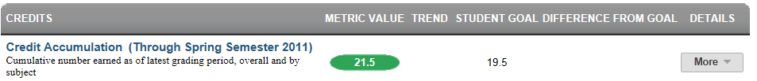

Dashboard Metrics


Credit Accumulation
Background
Student Dashboard Metrics
In order to monitor student progress toward completion of graduation requirements, many school districts across the nation, including Chicago, Dallas and New York, have incorporated metrics on credit accumulation into their internal performance management dashboards. In addition, during focus groups conducted with educators, the Credit Accumulation metric, as presented in screen shots of the student dashboard, was considered useful by 95% of those surveyed.
Although graduation requirements vary by state, the general principles applied in the student dashboard and data model for credit accumulation would be applicable to any state or district.
Primary Metric
- Credit Accumulation: cumulative number of credits earned as of the prior grading period compared to minimum credits required at mid-year and at the end of each year under the default state graduation plan.
Related Metrics
- On Track to Graduate: whether or not a student is on track to meet the 4x4 graduation requirement of earning one credit per year in each of the four core subjects.
- High School Graduation Plan: reports the student’s intended graduation plan and whether or not the student is below, at or above meeting credit requirements in all eligible courses for their intended plan.
- Class Grades – Failing: the number of courses with failing grades out of total courses taken at the end of each grading period, with a trend comparison to the student’s course failures as of the prior grading period.
- Class Grades – # of Course Grades Dropping 10% or More: the number of courses out of total taken for which the student’s most recent course grade is dropping 10% or more from the prior grading period, with a trend comparison to the student’s course declines as of the prior grading period.
- Number of Courses Repeating: number of courses a student is repeating.
- Class Grades Below C Level: the number of courses for which the student’s most recent course grade is below C (70%), with trend comparison to the student’s courses below C for the prior grading period.
User Interface
Dashboard Example
Figure 1 shows the Credit Accumulation metric as seen on the student dashboard.

Figure 1 Ed-Fi Credit Accumulation Metric
Status Definition
The Status Indicator is determined by whether the student is at, above, or below a linear path for meeting the recommended minimum number of credits for graduation.
The default threshold set in the Ed-Fi dashboards is based on the graduation plan requirements set by the state. The default mechanism to track credits by grade uses a linear path for the four years of high school (9-12), which assumes accumulating 6.5 credit hours per year. The credit thresholds to graduate and for each year can be adjusted to a particular district and/or state criteria.
| Metric Status Indicator | Trends Comparisons | |||
Metric Name | Sub-metric Name | Metric Status Indicator | From | To |
Credit Accumulation | not applicable | Red (BELOW) = if the student's total credit accumulation is less than the target number for the current grade level Green (ON TRACK) = if the student's total credit accumulation is greater than or equal to the target number for the current grade level | N/A | N/A |
(a) The Value column displays the total number of credits earned as of the last grading period.
Trends
The trend indicators do not apply to this metric.
Periodicity
Best practice is to load the data for this metric as soon as a semester grading period ends and transcript information is updated. At minimum, load this information at the beginning of a school year to assess any scheduling and/or targeted intervention required.
Recommended Load Characteristic s | |
Calendar | Throughout the school year |
Frequency of data load | End of each grading period |
Latency | Grading period |
Interchange schema | Interchange-StudentGrade.xsd |
Tooltips
The standard tool tips for the metric definition, column headers, and help functions display for this metric.
The following are tooltips specific to the Credit Accumulation metric:
- '+More' indicates drill down to the Historical View
Business Rules
The Credit Accumulation metric indicates whether the student is at, above, or below a linear path for meeting the number of credits for graduation.
- At the start of the school year, a student is "on track" if their total number of credits is at or above the targeted number of credits for the year. Table 4 lists the targeted number of credits for each year by grade level.
Student’s | Yearly Recommended Credits | Percent of Target |
|---|---|---|
9 | not applicable | not applicable |
10 | 6.5 | 25% |
11 | 13 | 50% |
12 | 19.5 | 75% |
- After mid-year first semester grade data is loaded, a student is "on track" if their total number of credits is at or above the targeted number of credits for mid-year. Table 5 lists the targeted number of credits for mid-year by grade level.
Student’s | Mid-Year Recommended Credits | Percent of Target |
|---|---|---|
9 | not applicable | not applicable |
10 | 9.5 | 37% |
11 | 16 | 62% |
12 | 22.5 | 87% |
On a straight linear basis the mid-year semester student needs to earn 3.25 credits. Because a student can only earn credits in 0.5 increments, the target is rounded down to 3 credits.
For students who fail a class, the credit is not earned or counted. If the student repeats the class and passes, the credit is earned and counted.
If a student is missing a transcript or has a partial transcript, that student is not included in the student's cohort.
If the middle school campuses send the transcripts for high school credits earned, these credits are considered in this metric.
Data Assumptions
- This metric is not available for students currently in the 9th grade.
- The student’s transcript must reflect the current credits earned.
- The credit targets are set based upon the state’s graduation requirements.
- The metric tracks to a linear accumulation of credits.
- Any course that is included in a student transcript is included in the calculation for credits earned.
Computed Values
The yearly targets for accumulated credits are:
- 10th grade: 25% of the credits to graduate
- 11th grade: 50% of the credits to graduate
- 12th grade: 75% of the credits to graduate
The semester targets for accumulated credits are:
- 10th grade: 37% of the credits to graduate
- 11th grade: 62% of the credits to graduate
- 12th grade: 87% of the credits to graduate
Table 6 defines how values are calculated for each grade level. The result of the calculation displays in the Status column on the campus dashboard.
Metric Values | |
For each grade level | Total number of earned credits / Total number of credits required to graduate |
Data Anomalies
Anomalies
Best practice is to use footnotes to address these anomalies:
- Loading of data from each semester period
- Late enrollees may not have previous grading period grades from another school
- Missing transcripts for transfer students
Footnotes
Footnotes are used to provide addition data information concerning the metric. Footnotes are sequential for the entire page. Therefore, a metric's footnote may not begin with the number 1.
The following footnotes appear below the metric:
- Late enrollee students that have not been present for a full grading period should be noted by a designated icon
- Missing transcripts for transfer students
Date of Refresh
Best practice is for the date of last data refresh to appear next the metric in the following format:
- (Through Spring Semester 2010)
Implementation Considerations
Student Identity
Maintaining a correct and consistent student identity is at the center of any education data system. Most systems use some sort of unique identifier. However, sometimes this identifier is entered incorrectly or sometimes different systems use different identifiers.
The UDM XML supports the interchange of multiple types of identifiers. The StudentReference is a complex type within the UDM to maintain the referential integrity of the student (that is, ensuring that the data associated with each student is accurately associated with the right student). The complex type of the student reference assists with implementing the accurate matching algorithm to identify a student by utilizing any of the individual attributes (e.g., Student Unique State ID, Student ID, Campus Local ID (with Campus ID), Name and Birth Date). For example, if the Student Unique State ID is unknown, you can find the student’s identity by their Student ID, First Name, Last Name and Birth Date.
Incomplete Transcript
Students who transferred in may have an incomplete transcript pending when their student record is received by their current campus and a business rule should be established to flag these cases. It should be noted in some fashion when the accumulated credits are not accurate because of an incomplete transcript.
Targets for Accumulated Credits
The targets for accumulated credits are based upon state-defined credit requirements for graduation.
Inclusion of Credits
The Ed-Fi dashboards assume that any credit type included in a transcript (e.g., standard, recovery, credits by exam, on-line) is to be included in the metric calculation. If any exceptions are relevant, these need to be accounted for in the metric calculation and assumptions.
State Assessment Exit Levels and End of Course State Assessments
In the case of Texas, the first set of end of course (EOC) state assessment test results are not available until June 2012 and then only for selected grades and subjects. In addition, these results are limited to raw scores only. The first full state assessment release (all grades, all subjects) with primary test forms will not occur until 2014.
The Ed-Fi Alliance is working through how the state assessment Exit Levels (examinations, scores and standards) relate to the state assessment End of Course data (examinations, scores and standards).
With the implementation of HB3 and EOCs, the calculation and display for the Credit Accumulation and On Track to Graduate metrics may change. For example, the Ed-Fi dashboards assume that students passing the exit level (state assessment ) examinations are also passing the courses. With state assessment, this assumption may not be applicable, making it necessary to rework the Credit Accumulation and On Track to Graduate metrics to account for students who are passing the course, but do not pass the EOC exam. The On Track to Graduate metric may require additional granular metrics.
State Assessment and Assessment Accommodations
For state assessment, the Ed-Fi dashboards display a marker on the dashboard (an A in box) when a student has one or more accommodations for a test. The Ed-Fi dashboards handle state assessment accommodations in the same way.
Drill Downs
Description
The Historical Drill Down displays a chart of cumulative credits versus linear goals for one or more types of graduation plan. The historical drill down is grayed out if the student is currently in the 9th grade.
Drill Down Views
The dashboards include the option to drill down and see more detail that is associated with a metric. Table 7 lists the drill down views that are recommended for this metric.
Detail | Planned: Link to “Academic Profile” page to view transcript details of courses, grades and credits earned | |
Historical | A graph displaying the student's earned credits at each grade level compared to the targeted credits for each grade level for the student's graduation plan |
User Interface Notes
The Historical Drill Down includes:
- a bar chart of actual cumulative credits per grade per year
- line graph of state-defined thresholds of credit targets for graduation, as shown in Table 8.
Grade Level | Recommended Yearly Credits | Minimum Yearly Credits |
|---|---|---|
9 | 6.5 | 5.5 |
10 | 13 | 11 |
11 | 19.5 | 16.5 |
12 | 26 | 22 |
If the student has cumulative credits
- greater than or equal to the recommended credits, the bar chart displays in green.
- less than or equal to the recommended credits, the bar chart displays in red.
Dashboard Example
Figure 2 shows the Credit Accumulation detail as seen on the student dashboard.

Figure 2 Ed-Fi Credit Accumulation Historical Graph Detail
Drill Down Tooltips
- The number of credits accumulated by the student is shown when an educator hovers over a specific grade’s bar, as shown in Figure 2.
Drill Down Footnotes
- In cases where a student has incomplete or missing transcript data, credit shortfalls are likely.
- Data should be updated every semester
Business Rules
The Credit Accumulation Historical Graph shows the following elements:
- For each grade completed by the student, the number of credits accumulated at completion of that semester or final grade.
- For each type of graduation plan, the linear target set of credits for each year, assuming 25% per year for grades 9-12.
The Ed-Fi dashboards default graduation plans plotted reflect the following state-mandated credits:
- Recommended and Distinguished Plans require 26 credits for graduation
- Minimum Plan requires 22 credits for graduation
Data Assumptions
- This view is not available for students currently in the 9th grade.